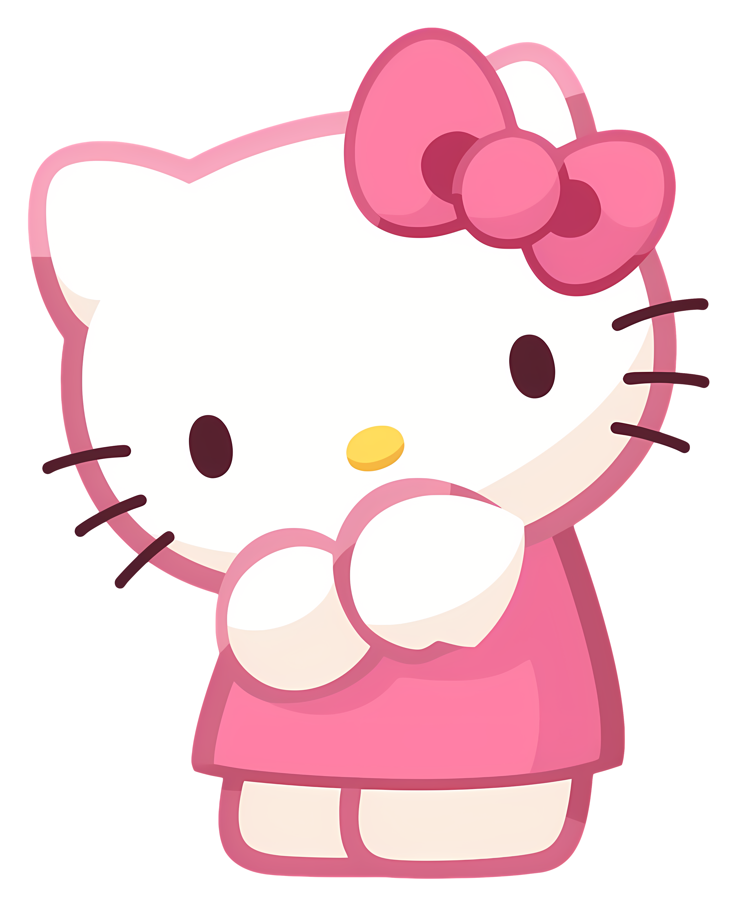
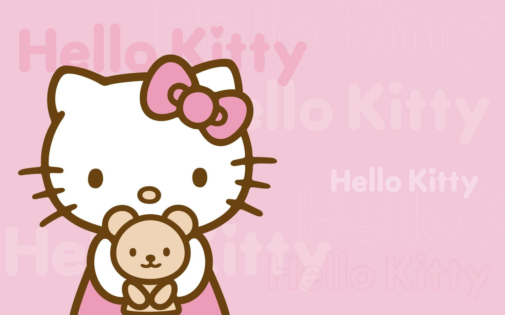
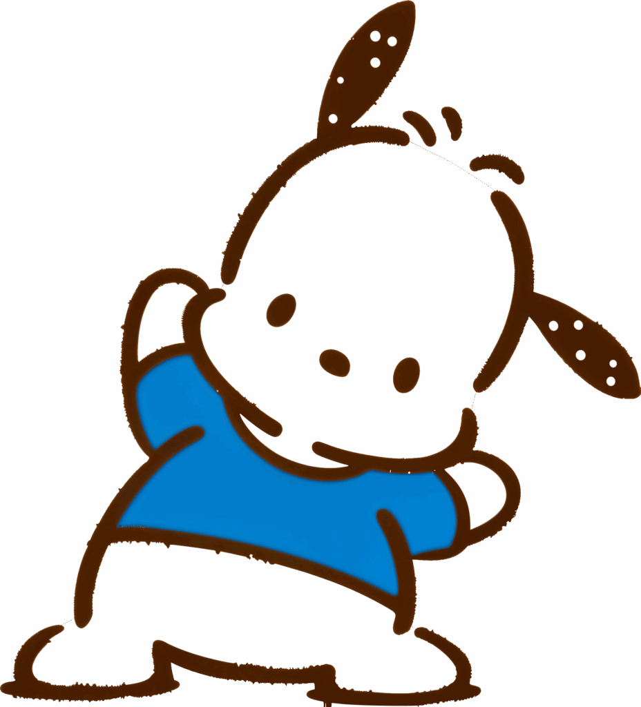
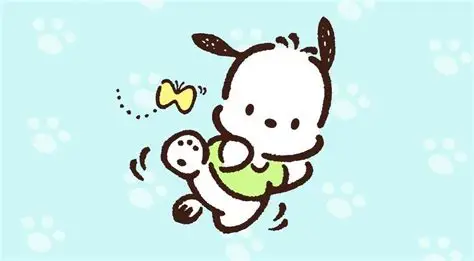
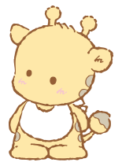
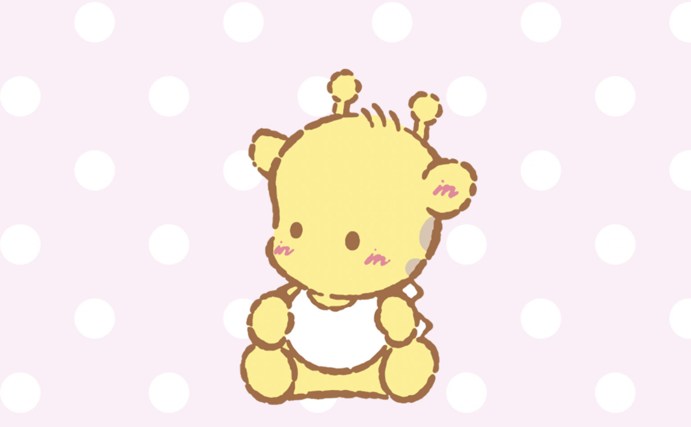
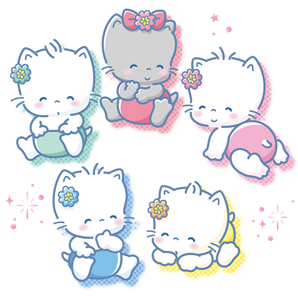
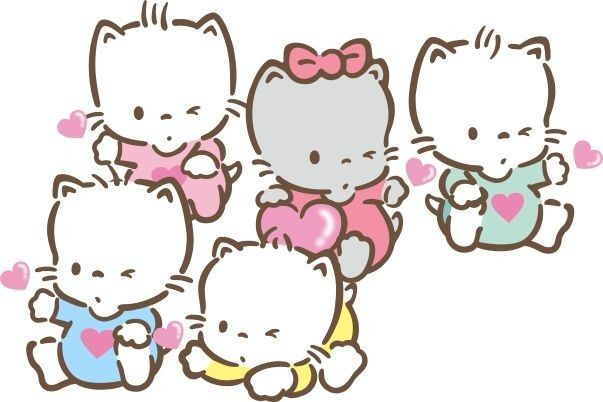

Sanrio Characters

Hello Kitty
Su nombre real es Kitty White. Nació en los suburbios de Londres, Inglaterra. Mide como cinco manzanas. Pesa aproximadamente el peso de tres manzanas. Una chica inteligente y amable.
Personalidad y gustos
Es conocida por ser amable, generosa y sociable con sus amigos y familiares. Le gusta ayudar a los demás y siempre busca hacer sentir felices a quienes la rodean. Es curiosa y aventurera, disfruta de aprender cosas nuevas y compartir momentos especiales con amigos. A pesar de ser un personaje dulce y tierno, también tiene una personalidad independiente y responsable, preocupándose por su entorno y por mantener buenos valores en su día a día. le encanta dibujar, hacer manualidades, cocinar y hornear para sus amigos y familiares, Le gusta vestirse con ropa bonita y usa su característico lazo rojo en la oreja izquierda, símbolo de su estilo tierno y sencillo.


Pochacco
Su nombre proviene de la expresión japonesa Pocha Pocha, que significa “gordito, apachurrable y tierno”. Físicamente, es un perro blanco con orejas, cola y nariz negras, sin boca visible, y suele vestir camisetas deportivas rojas o azules.Vive en Uguisu Alley, en las afueras de Fuwafuwa Town, y su cumpleaños es el 29 de febrero, celebrado sólo en años bisiestos. Originalmente llamado "The Yorimichi Dog", su diseño se inspira en Snoopy de Peanuts, lo que contribuye a su gran popularidad
Personalidad y gustos
Pochacco es curioso, torpe y entusiasta, con una inclinación por los deportes como baloncesto, fútbol, skateboarding y karate.Le gusta pasear, comer helado de plátano y es vegetariano. Su color favorito es el azul claro, reflejando su carácter tranquilo y amigable. A menudo se tropieza y se lastima la cabeza debido a su torpeza, lo que añade un toque cómico a su personalidad


Paupipo
Representa a un jirafa macho y príncipe del planeta Kirin, un lugar mágico en el universo de los personajes de Sanrio.
Su nombre, “Paupipo”, en el lenguaje de las estrellas y planetas significa “una pequeña felicidad”, reflejando su naturaleza alegre y su interés en los detalles simples y felices de la vida.
Personalidad y gustos
Paupipo se caracteriza por ser solitario y buscar atención. Es amigable y curioso, pero su deseo de compañía lo hace sentir especial dentro de la amplia gama de personajes de Sanrio.
Su forma de ser combina un toque de melancolía con un espíritu soñador, lo que lo hace ideal para aventuras imaginativas y relatos llenos de fantasía.

NYA・NI・NYU・NYE・NYON

Es una camada de cinco gatitos traviesos: cuatro chicos de pelaje blanco y una chica de pelaje gris
. Cada uno tiene características y gustos propios:
Todos cumplen roles distintos dentro de la camada y forman un grupo muy dinámico y adorable que resuena con los fans de Sanrio.
Estos cinco gatitos forman una camada equilibrada: Nya lidera con madurez, Ni y Nyu aportan ternura y alegría, Nye añade un toque moderno y femenino, mientras que Nyon introduce humor y travesuras. La combinación de sus rasgos crea un grupo muy dinámico y atractivo para los fanáticos de Sanrio
Personalidad y gustos
Nya (ニャ): El más responsable y maduro, a menudo aparece con ropa verde y a veces con pecas.
Ni (ニィ): Amable y adora los malvaviscos, generalmente se lo representa con ropa azul o una gorra azul y amarilla.
Nyu (ニュ): Mimado y un poco bebé, le gusta la leche y viste de amarillo.
Nye (ニェ): La única niña, moderna y precoz, con pelaje gris y lazos y ropa rojos.
Nyon (ニョン): Travieso y problemático, suele llevar un pañal rosa o un pelele azul claro

BIBLIOGRAFÍA
Ranking Oficial de Sanrio 🎀
Lista de personajes de Sanrio (Fandom) ⭐
Enciclopedia de los personajes de Sanrio 🧸
Lista completa de Personajes de Sanrio 🍰